Introduction to Data Science
Sara Bates & Diana Pfeil
Girl Develop It Boulder, March 2015
About Us
 |
 |
| Sara Bates, @BatesSara | Diana Pfeil, @dianam |
What is data science?

Source: http://drewconway.com/zia/2013/3/26/the-data-science-venn-diagram
...data scientists [need] to communicate in language that all their stakeholders understand—and to demonstrate the special skills involved in storytelling with data, whether verbally, visually, or — ideally — both.- DJ Patil and Thomas Davenport, Data Scientist: The Sexiest Job of the 21st Century, Harvard Business Review
...the dominant trait among data scientists is an intense curiosity — a desire to go beneath the surface of a problem, find the questions at its heart, and distill them into a very clear set of hypotheses that can be tested.- DJ Patil and Thomas Davenport, Data Scientist: The Sexiest Job of the 21st Century, Harvard Business Review
Why is data scientist “The Sexiest Job of the 21st Century”?

What is Big Data?

What do data scientists do?
- Exploratory data analysis
- Predictive analytics and machine learning
- Testing and experimentation
- Data communication and visualization
A Typical Toolkit
- Python with pandas, numpy, scipy
- R, RStudio
- Unix utilities
- JVM (aka Java-based) tools: Hadoop, Spark
Exploratory Data Analysis
Titanic Survivors

Data Legend
| survived | Survival (0 = No; 1 = Yes) |
| Pclass | Passenger Class (1 = 1st; 2 = 2nd; 3 = 3rd) |
| name | Name |
| sex | Sex |
| age | Age |
| sibsp | Number of Siblings/Spouses Aboard |
| parch | Number of Parents/Children Aboard |
| ticket | Ticket Number |
| fare | Passenger Fare |
| cabin | Cabin |
| embarked | Port of Embarkation (C = Cherbourg; Q = Queenstown; S = Southampton) |
Data formats
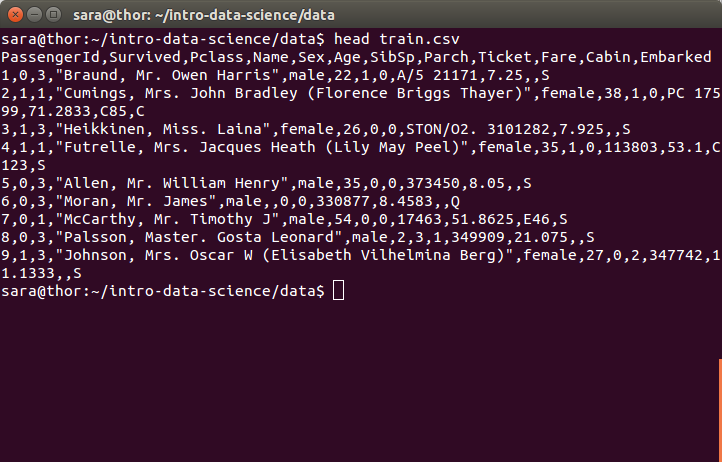Dataframes
import pandas as pd
df = pd.read_csv("../data/train.csv")
print df.head()
Summary Statistics
print df.dtypes
print df['Age'].describe()
Plotting
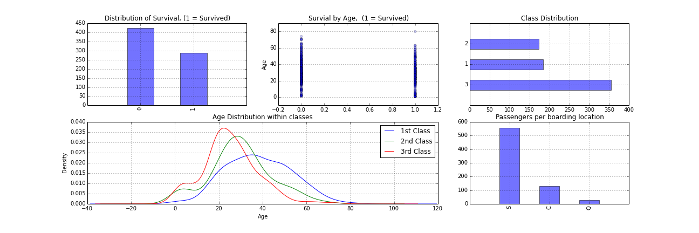Women and children first?
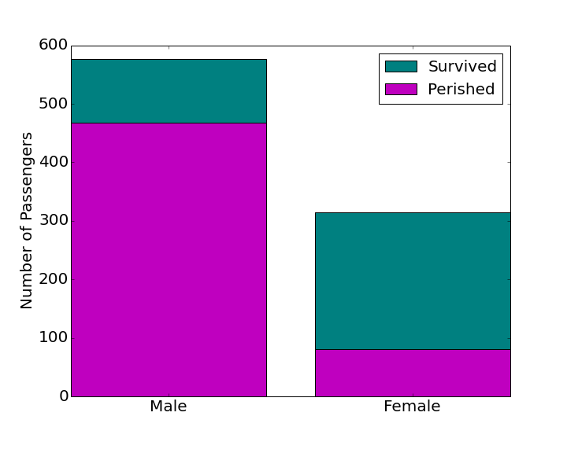Women and children first?
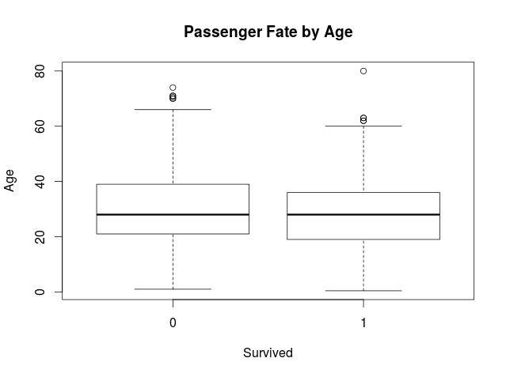Data Issues
- Typos
- Missing data
- Redundant data
- Formatting
- Outliers
Example Data
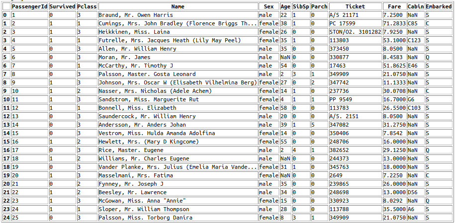Missing Data
df = df.drop([Cabin'], axis=1)
med_age = df.Age.median()
df.Age = df.Age.fillna(med_age)
Formatting & Typos
df['Fare'][19] = 7.2250
df = df.drop(['Ticket'], axis=1)
Predictive Analytics and Machine Learning
Machine Learning
Supervised Learning
Unsupervised Learning
Statistical Modeling
Descriptive, Predictive, and Prescriptive Analytics
Supervised Learning
| $x_i$ | features (input variables) |
| $y_i$ | target (output variable) |
| $ (x_i, y_i), i=1,\ldots,m $ | training set |
Goal: learn a function $$h : \mathcal{X} \rightarrow \mathcal{Y}$$ such that $h(x)$ is a good predictor of $y$ on new data
| features $x$ can be | |
| numeric/metric | Age: 14, 56, 1 |
| ordinal | Ranking: 1st, 2nd, 3rd |
| categorical/nominal | Sex: male/female |
| target $y$ can be | |
| continuous (regression) | Housing Price: 500K, 150K, 2MM |
| categorical (classification) | Survival: Perish, Survive |
But where do we find this $h$?
This is the process of doing predictive modelingPredicting Survival on the Titanic
- Clean and explore the data
- Come up with new features
- Split data into training and test
- Tune the model and parameters using cross-validation
- Compare model results
Step 2: Feature Engineering
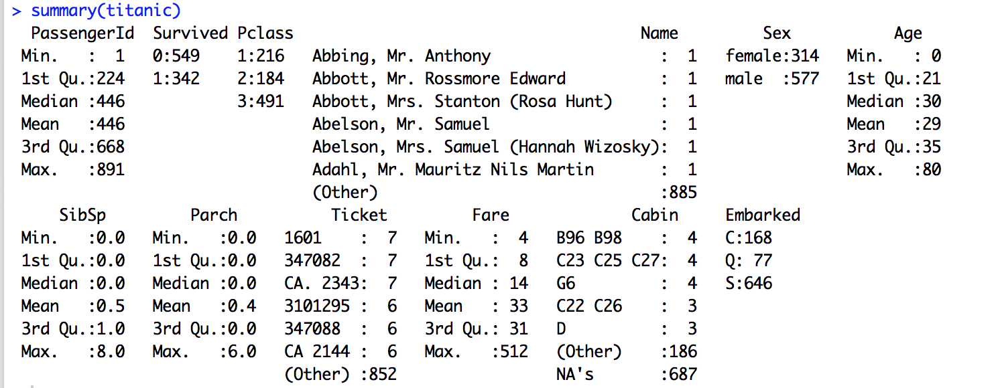Extract honorific from the Name feature
titanic$Title <- gsub(".*\\, ([A-Za-z ]+)\\..*", "\\1", titanic$Name)
titanic$Title <- as.factor(titanic$Title)
unique(titanic$Title)
[1] "Mr" "Mrs" "Miss"
[4] "Master" "Don" "Rev"
[7] "Dr" "Mme" "Ms"
[10] "Major" "Lady" "Sir"
[13] "Mlle" "Col" "Capt"
[16] "the Countess" "Jonkheer"
More New Features
Family combines siblings and spouses with parents and children
data$Family <- data$SibSp + data$ParchFare.pp attempts to adjust group purchases by size of family
data$Fare.pp <- data$Fare/(data$Family + 1)First character in Cabin number represents the Deck
data$Deck <- substring(data$Cabin, 1, 1)
data$Deck[ which( is.na(data$Deck ))] <- "UNK"
data$Deck <- as.factor(data$Deck)Odd-numbered cabins were reportedly on the port side of the ship, Even-numbered cabins on the starboard side
cabin.last.digit <- str_sub(data$Cabin, -1)
data$Side <- "UNK"
data$Side[which(isEven(cabin.last.digit))] <- "port"
data$Side[which(isOdd(cabin.last.digit))] <- "starboard"Step 3: Split data into training and test
require('caret')
set.seed(99)
trainI <- createDataPartition(y = titanic$Fate, p = .80, list = FALSE)
training <- titanic[ trainI,]
test <- titanic[-trainI,]Step 4: Train the model using cross-validation
Which model?
| Classification Tree | Regression Tree |
| Random Forest | Linear Regression |
| Support Vector Machine | Logistic Regression |
| Boosting | K-Nearest Neighbors |
| Naive Bayes | Neural Network |
Train a Decision Tree
ctrl <- trainControl(method = "cv",
classProbs = TRUE,
summaryFunction = twoClassSummary)
tree1 <- train(Fate ~ ., data = training,
method = "rpart",
metric = "ROC",
trControl = ctrl)k-fold cross-validation
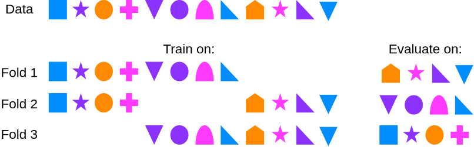Confusion Matrix
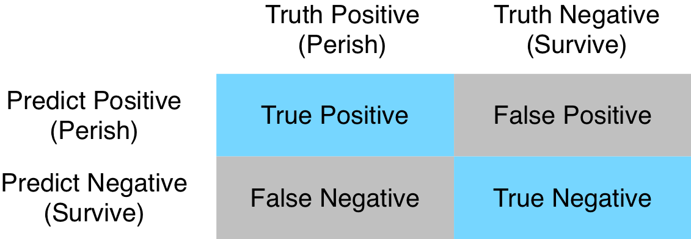Accuracy = $\frac{TP + TN}{TP + TN + FP + FN}$
Random Forest
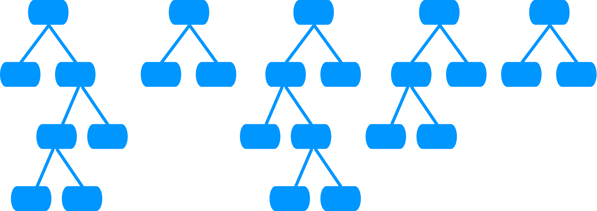Train a Random Forest
rf.grid <- data.frame(.mtry = c(2, 3))
randomForest <- train(Fate ~ .,
data = training,
method = "rf",
ntree = 1000,
tuneLength = 5,
metric = "ROC",
tuneGrid = rf.grid,
trControl = ctrl)Step 5: Let's Compare the Models
Classification Tree
pred_class <- predict(dtree, newdata=testdata, type="raw")
truth_class <- testdata$Fate
confusionMatrix(pred_class, truth_class)
Confusion Matrix and Statistics
Reference
Prediction Perished Survived
Perished 100 17
Survived 9 51
Accuracy : 0.853
Sensitivity : 0.917
Specificity : 0.750Random Forest
pred_class <- predict(randomForest, newdata=test, type="raw")
truth_class <- test$Fate
confusionMatrix(pred_class, truth_class)
Confusion Matrix and Statistics
Reference
Prediction Perished Survived
Perished 101 12
Survived 8 56
Accuracy : 0.887
Sensitivity : 0.927
Specificity : 0.824Supervised Learning Summary
- Clean and explore the data
- Come up with new features
- Split data into training and test
- Tune the model and parameters using cross-validation
- Compare model results
Testing and Experimentation
“[But] the best data-driven companies don’t just passively store and analyze data, they actively generate actionable data by running experiments. The secret to getting value from data is testing, and if you’re looking to grow your online business, implementing well-executed, consistent A/B testing is a necessity.”- Wyatt Jenkins, A/B Testing and the Benefits of an Experimentation Culture, Harvard Business Review
What is A/B testing?
VS.
Multi-Armed Bandit

Multivariate Testing
VS.
VS.
VS.
What NOT to do

No peeking!
Data Communication and Visualization
Beware of Model Complexity
If the model does not get used, it does not add value
Translate Model Results into Business Value/ROI
Create Great Charts
Often the most effective way to describe, explore, and summarize a set of numbers - even a very large set - is to look at a picture of those numbers.-Edward Tufte
The Visual Display of Quantitative Information
| 1 | 2 | 3 | 4 | |||||||
| $x$ | $y$ | $x$ | $y$ | $x$ | $y$ | $x$ | $y$ | |||
| 10 | 8.04 | 10 | 9.14 | 10 | 7.46 | 8 | 6.58 | |||
| 8 | 6.95 | 8 | 8.14 | 8 | 6.77 | 8 | 5.76 | |||
| 13 | 7.58 | 13 | 8.74 | 13 | 12.74 | 8 | 7.71 | |||
| 9 | 8.81 | 9 | 8.77 | 9 | 7.11 | 8 | 8.84 | |||
| 11 | 8.33 | 11 | 9.26 | 11 | 7.81 | 8 | 8.47 | |||
| 14 | 9.96 | 14 | 8.10 | 14 | 8.84 | 8 | 7.04 | |||
| 6 | 7.24 | 6 | 6.13 | 6 | 6.08 | 8 | 5.25 | |||
| 4 | 4.26 | 4 | 3.10 | 4 | 5.39 | 19 | 12.50 | |||
| 12 | 10.84 | 12 | 9.13 | 12 | 8.15 | 8 | 5.56 | |||
| 7 | 4.82 | 7 | 7.26 | 7 | 6.42 | 8 | 7.91 | |||
| 5 | 5.68 | 5 | 4.74 | 5 | 5.73 | 8 | 6.89 | |||
Principles of Data Visualization
Above all else, show the data
Draw attention to the data, not the visualization
Source: http://news.nationalpost.com/2012/05/18/how-quebecs-tuition-price-tags-match-up-to-the-rest-of-canada-graphic/
Use a minimum of ink
Erase non-data-ink (within reason)
Erase redundant data-ink (within reason)
Forego chartjunk - interior decoration of graphics
| 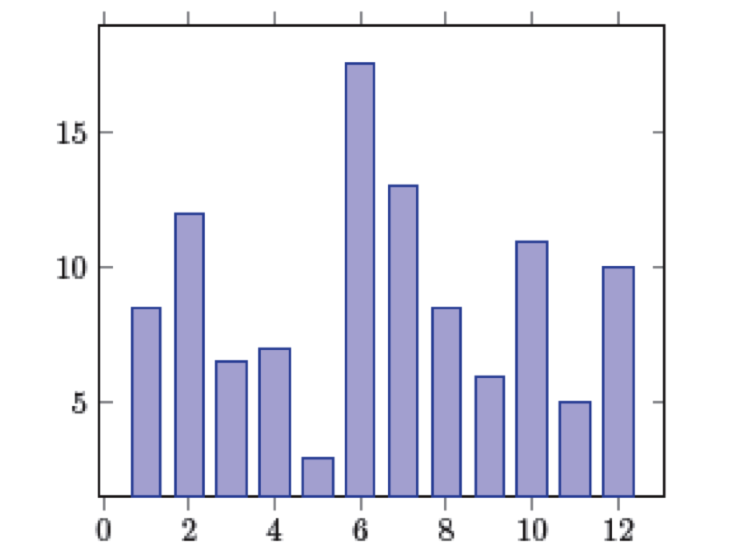 | 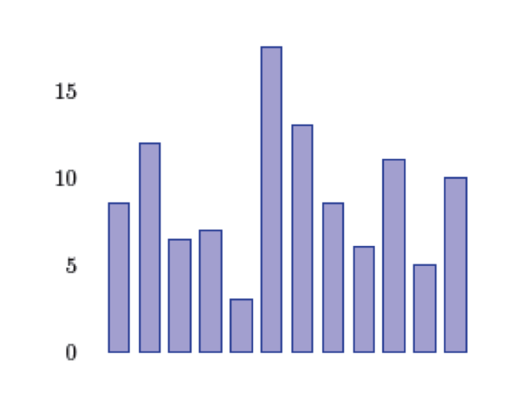 |
| 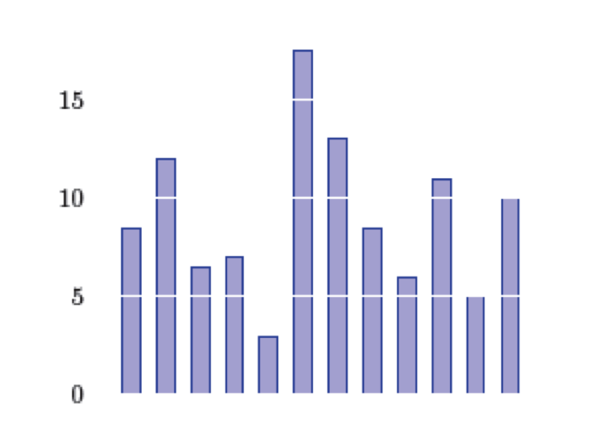 | 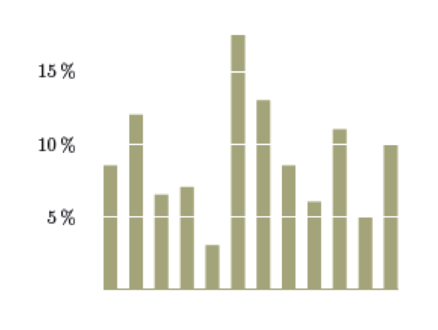 |
Source: http://www.statisticalskier.com/2012/07/tour-de-france-stage-4/
Source: http://fivethirtyeight.com/datalab/babys-first-profanity/
Avoid creating graphical puzzles
Why Alcohol is More Dangerous than Heroin
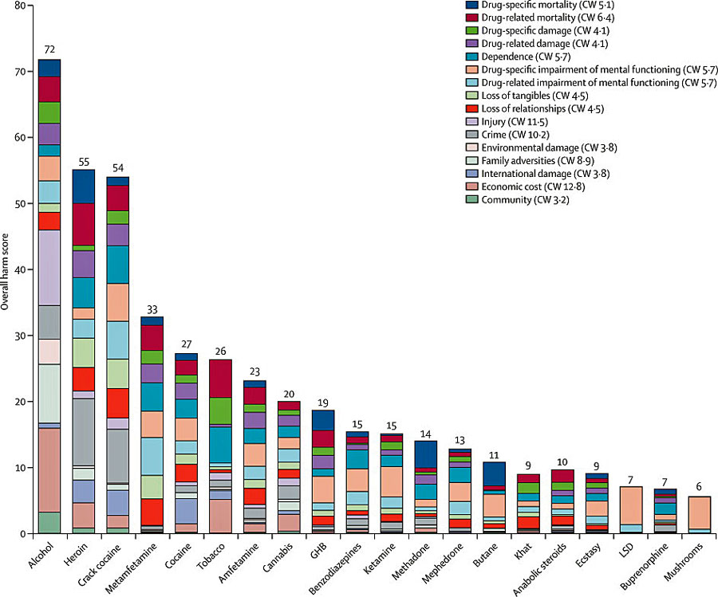Source: http://www.businessinsider.com/alcohol-more-harmful-heroin-2012-7
Why Alcohol is More Dangerous than Heroin
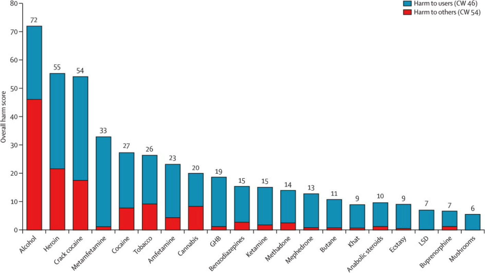Source: http://fivethirtyeight.com/datalab/babys-first-profanity/
Do not distort the data
Visual representation should be consistent with the numerical representation
Source: https://blogs.oracle.com/experience/entry/pie_charts_just_dont_work_when_comparing_data_-_number_10_of_top_10_reasons_to_never_ever_use_a_pie
Source: http://chartjunk.karmanaut.com/?p=45
Graphical excellence is that which gives to the viewer the greatest number of ideas in the shortest time with the least ink in the smallest space.-Edward Tufte

Source: https://c2.staticflickr.com/2/1162/1415120191_2aef20cb08_b.jpg
Resources for becoming a data scientist
- Programming
Intro to Python GDI class, SQL GDI Class - Statistics / machine learning / math
MOOCs, Coursera - Domain knowledge
Think, talk to people, be proactive, learn as you go - Kaggle